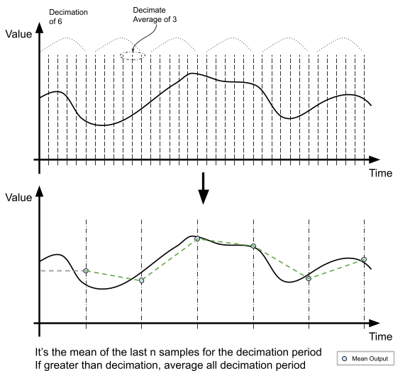

Read value continuously as mean and mean squared values. The port and data are triggered only if the data is ready. The decimation and decimate_average principle is described by the picture below:

| name |
type | description |
def |
min |
max |
| device_id |
integer | The ADC Device number to be configured. For internal ADCs, this is the unit. For external ADCs, this is the address enumeration. |
0 |
0 |
9 |
| channel |
integer | The ADC Channel ID. If it is disabled, it will neither output anything nor trigger the output event. |
0 |
0 |
15 |
| decimation |
integer | The ADC Decimation number. This means dividing the sampling frequency by this parameter. |
1 |
1 |
1000000000 |
| decimate_average |
integer | The number of the last samples in the decimation period for average. It must be greater than 1 and less than the decimation parameter. This will be capped to the decimation parameter when this is greater than it. |
1 |
1 |
1000000000 |
| bias |
float | The bias of the out need to be taken from the value. It's a floating point number in mV.
This can be overwritten with the MS bias input.
|
0 |
-200000000 |
200000000 |
| In Ev. |
Description |
| enable |
Enable the averaging and port output action. |
| disable |
Disable the averaging and port output action. |
| Data In |
Description |
| MS bias |
The bias (offset) for Mean Squared calculation. The values is 10 bit fixed precision mV (i.e. x 1024 mV).
This input overwrites bias parameter.
|
| Data Out |
Description |
| mean |
Average based on the decimation principle. The output values is 10 bit fixed precision mV (i.e. x 1024 mV). |
| var. |
Variance based on previous computed mean and the decimation principle. The result's value is mV^2. |
| M.S. |
Mean Square based on the decimation principle. The result's values is mV^2. |
| Out Ev. |
Description |
| -- |
Triggered once new data is ready. |
| -- |
Triggered when mean squared bias is set. |
| error |
Triggerred when:
-
The ADC unit is not initialised
-
The ADC unit is not configured with the same mode as the corresponding ADC channel block type (continuous)
|
| -- |
When the conversion is enabled. |
| -- |
When the conversion is disabled. |
| State Machine |
None |
| Toolbox |
Core |
Version |
v1.0. |
| Licence Type |
LGPLv3 |
Component Supplier |
inx ltd.
|
| Minumum DCC |
A0000 |
Profiles |
All. |